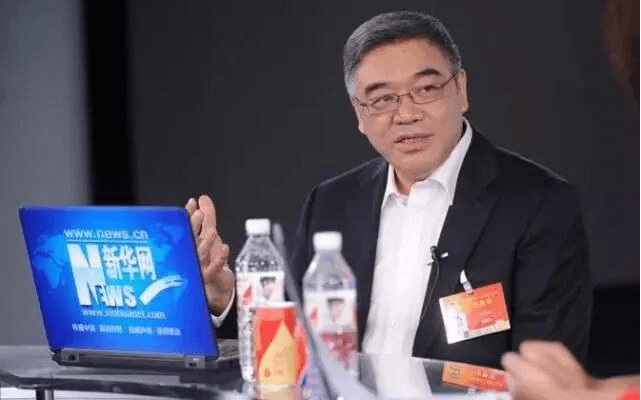
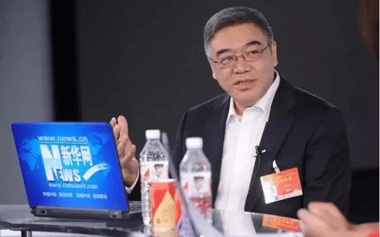

关注中鹏
关注中鹏
两会声音：关注职业教育，助力技能强国
2018/10/05 14:06:17
职业教育与产业改革如何融为一体?如何应对当前普遍存在的职教与产业“两张皮”、“校热企冷”等突出问题？如何通过发展职业教育,营造培育“工匠精神”的良好土壤?
2017年，“职业教育改革助推制造业发展”成为民进中央的年度重点考察调研选题。通过调研，民进中央提出建议，应从改革国家职业教育管理体制顶层设计入手，设立机制统筹教育部、人社部和其他相关部委、行业协会、企业的各类资源，实现技能人才培养和使用的综合配置、协调发展。  职业教育与产业改革如何融为一体?如何应对当前普遍存在的职教与产业“两张皮”、“校热企冷”等突出问题？如何通过发展职业教育,营造培育“工匠精神”的良好土壤?
2017年，“职业教育改革助推制造业发展”成为民进中央的年度重点考察调研选题。通过调研，民进中央提出建议，应从改革国家职业教育管理体制顶层设计入手，设立机制统筹教育部、人社部和其他相关部委、行业协会、企业的各类资源，实现技能人才培养和使用的综合配置、协调发展。  职业教育与产业改革如何融为一体?如何应对当前普遍存在的职教与产业“两张皮”、“校热企冷”等突出问题？如何通过发展职业教育,营造培育“工匠精神”的良好土壤?